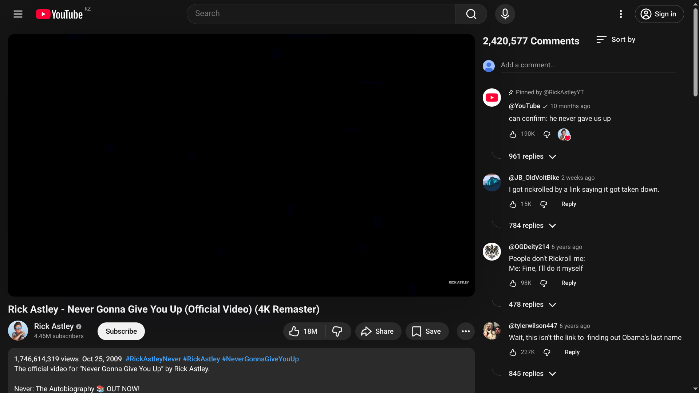

Move comments to the right side and keep your watch page clean.
Controls
- Sidebar toggle
- Expand description
- Show recommended
- Show scrollbar
- Compact comments
- Persistent comment box
To access these settings, click the puzzle icon in the browser's toolbar and then the extension. You can also pin it for easier access.
Shortcuts
- Windows: Ctrl+Shift+Y
- Linux: Ctrl+Shift+U
- Mac: Cmd+Shift+Y
